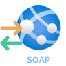

SOAP Service
Incoming request → · outgoing response ←
24 px
40 px
48 px
Your App Service reference with request/response directions · Awaiting approval

Incoming request → · outgoing response ←
Outgoing request → · incoming response ←
Incoming request → · outgoing response ←
Outgoing request → · incoming response ←